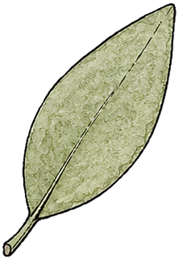

What happens to your days
Kai’s Flow is a journal. This page says, in plain words, what it keeps, who else sees any of it, and how to take it all back.

What we keep
Your account email, and what you put in the app: tasks, projects, your calendar blocks, routines, your journal and the people you add. It lives in a database run by Supabase, in the EU, and only your account can read it.
What the AI sees
Only what you send it on purpose — a capture you speak or type, or a message in chat. We send it to Groq, which answers and keeps nothing (zero data retention) and never trains on it. Nothing else in your account is shown to any AI.
Google Calendar
If you connect Google Calendar, we read your events to show them beside your tasks, and write the time blocks you ask us to. We don’t use your calendar for anything else, and you can disconnect it at any time from Settings.
What we never do
No ads. No selling or sharing your data. No tracking, analytics or fingerprinting, in the app or on this site. No cookies beyond the one that keeps you signed in.
Taking it with you, or leaving
Settings → Account → Export gives you everything as plain files. Delete account removes your data from our database within 30 days, and from backups within 90.
Talking to us
Write to privacy@kaisflow.app. A person reads every message, usually within two days.